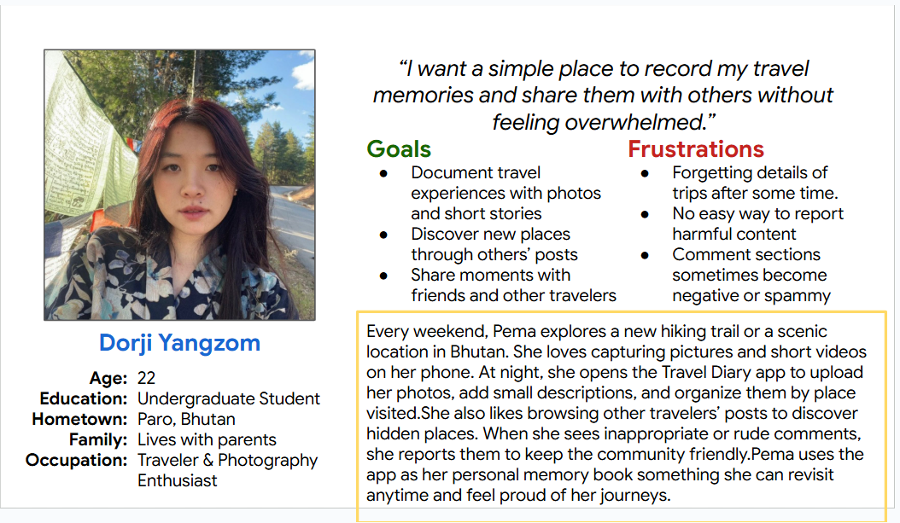
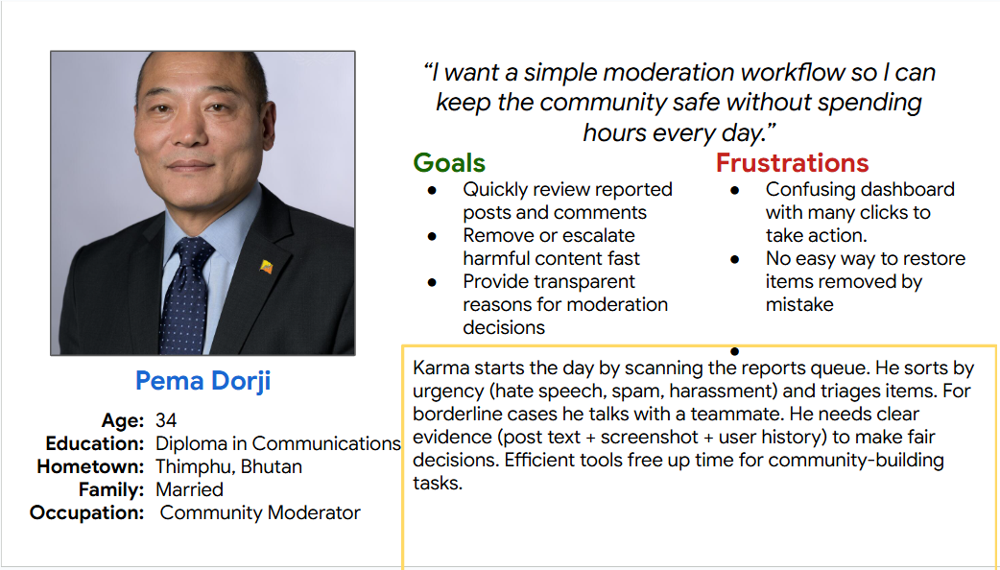
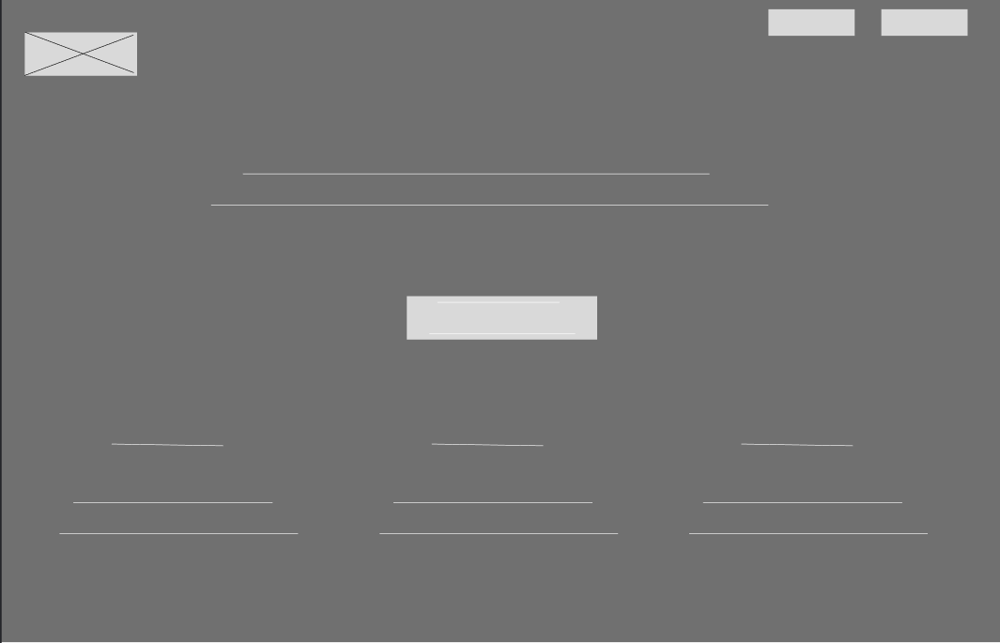
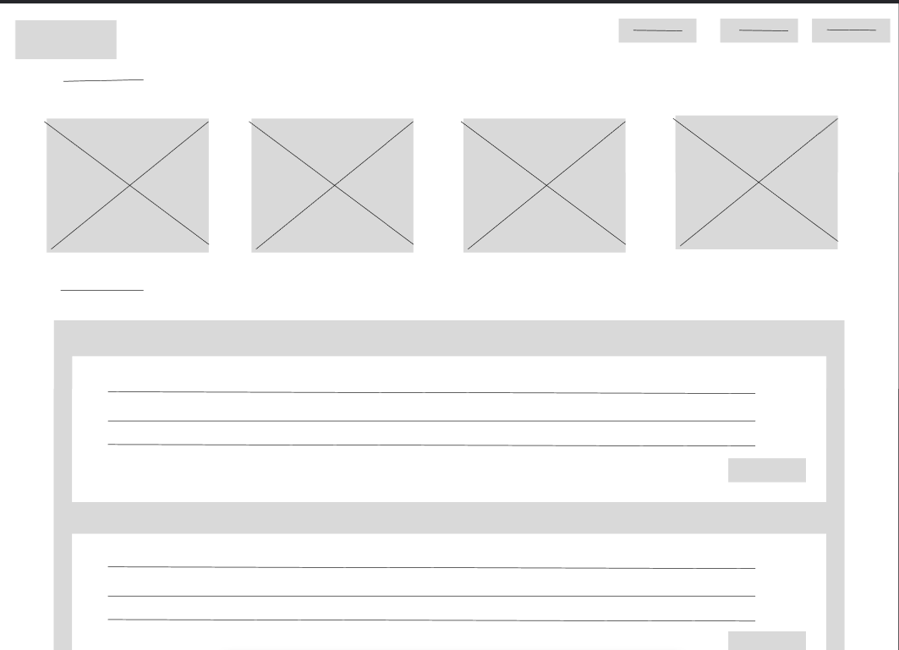
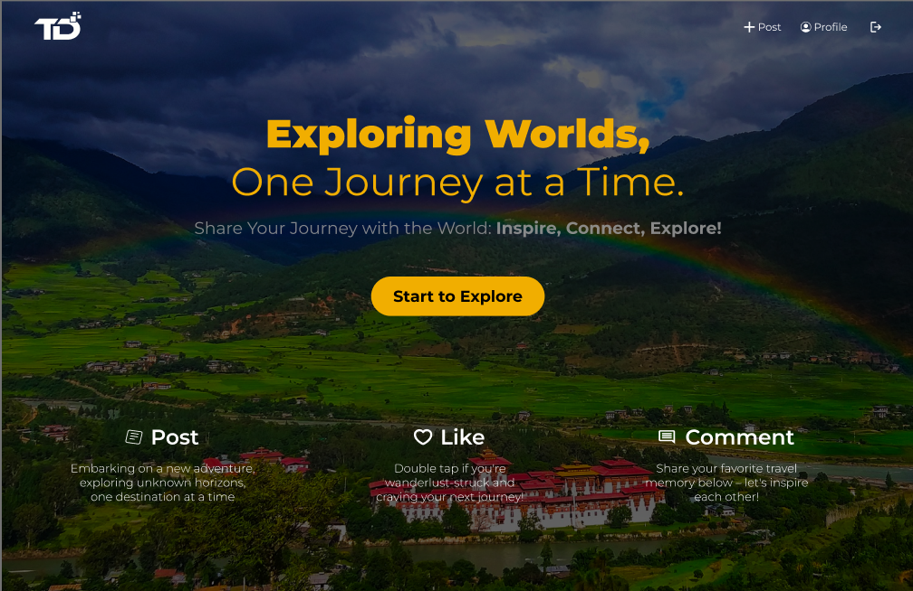
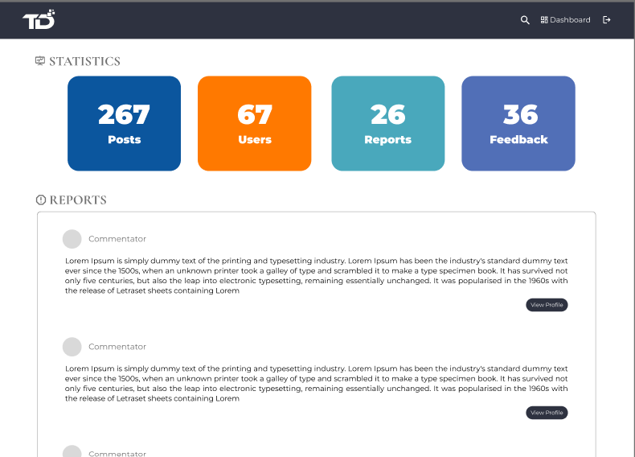

Back
Travel Diary App – Case Study
A modern mobile-first platform where travelers can upload photos, write descriptions, explore others’ journeys, and interact through comments while admins ensure a safe environment.
📌 Problem Statement
Travelers want a simple, dedicated platform to document memories and share their journeys. Existing social media apps are crowded, lack structure, and make it difficult to organize travel stories. The Travel Diary App provides an elegant way to upload stories, interact, and maintain a safe digital space.
🎯 Goals & Objectives
User Goals
- Upload travel photos with descriptions
- Share memories with friends or followers
- View and interact with others’ travel stories
- Comment on posts
- Report inappropriate content
Admin Goals
- Review reported content
- Manage or delete harmful posts/comments
- Maintain a safe travel community
🧪 User Research
- Online survey (15–30 travelers)
- 1:1 Interviews with frequent travelers
- Competitor analysis (Instagram, TripAdvisor, Pinterest)
💡 User Insights
For Travelers
- Want a clean, gallery-focused layout
- Prefer short travel stories paired with images
- Value safe, supportive community interactions
- Need easy edit/delete features for posts
- Want reporting tools to handle unwanted content
For Admins
- Need clear visibility of reported posts
- Easy delete + review tools
- Require simple categorization of reports
👤 User Persona

- Name: Dorji Yangzom- Student Traveler
- Age: 22
- Goal: Document trips beautifully
- Pain Points: Disorganized social media, cluttered UI

- Name: Pema Dorji – Admin Moderator
- Age:34
- Goal: Maintain positive environment
- Pain Points: Too much spam, difficult moderation tools
📐 Low-Fidelity Wireframes
Early sketches to validate user flow and structure before high-fidelity design.

Low-Fi – User screen

Low-Fi –Admin
🎨 High-Fidelity Designs
The final UI emphasizes simplicity, clean layout, and photo-first visual hierarchy.

Hi-Fi – User screen

Hi-Fi – Admin
🔀 User Flows
Traveler Flows
- Upload → Add Description → Publish
- Scroll feed → View → Comment
- Report inappropriate posts
Admin Flows
- Dashboard → Review reports
- Delete or keep
- Monitor community
🎨 Iterations & Design Rationale
- Added stronger photo hierarchy for travelers
- Introduced clearer report button after feedback
- Enhanced admin dashboard with categorized reports
- Improved spacing for cleaner feed
📝 Reflections
- Visual hierarchy is essential for image-heavy apps
- Moderation tools build trust in small communities
- User testing revealed hidden usability issues early
- Balancing simplicity with features was the biggest challenge